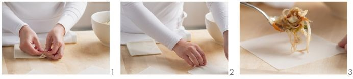
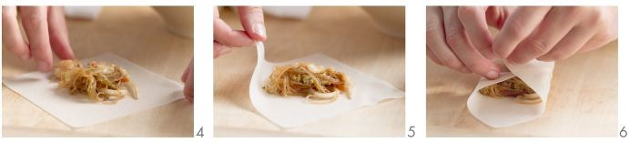
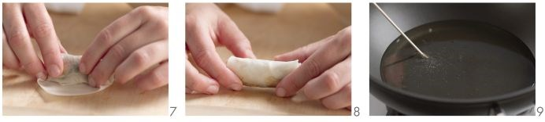
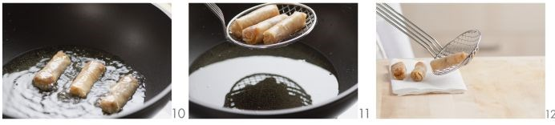

Chinese Spring Rolls

INGREDIENTS
- 100g glass noodles
- 200g grated white cabbage
- 2 grated carrot
- 200g bean sprout
- 2 cloves chopped garlic
- Soy sauce
- 30ml sesame oil
- 20 sheets spring roll pastry
- oil for frying
COOKING METHOD
- To make the spring rolls start cooking the noodles according to the directions on the package.
- Mix together the carrots, cabbage, bean sprouts, garlic and oil.
- Drain the noodles and cut them into 4cm long pieces and them to the mixture.
- Season with salt, ground black pepper, soy sauce and a pinch of sugar and gently beat the egg.
- Remove one spring roll sheet from the pile and place on the work surface. Spread 30ml of filling in the middle.

- Fold over the sides and roll up.

- Fry spring rolls in hot oil for 4-5 minutes until golden brown.

- Dry on kitchen paper.

- If desired serve the spring rolls with soy sauce.